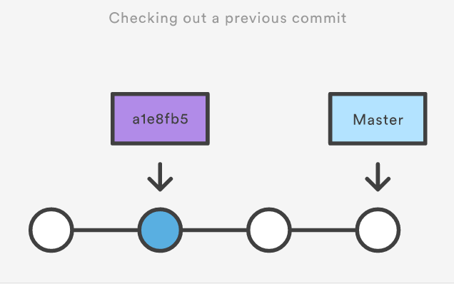
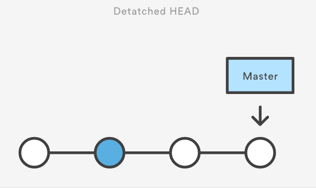
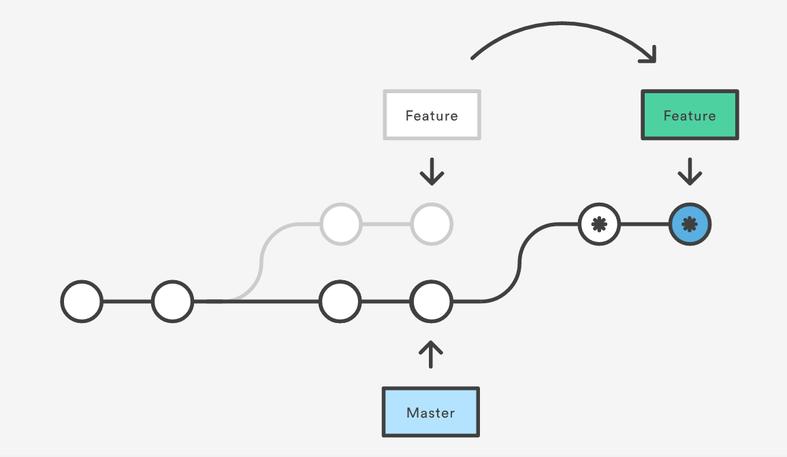
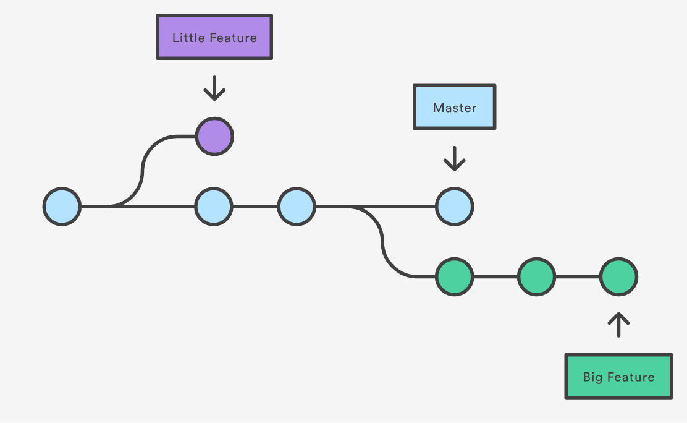
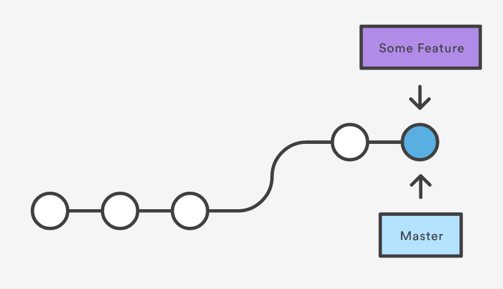
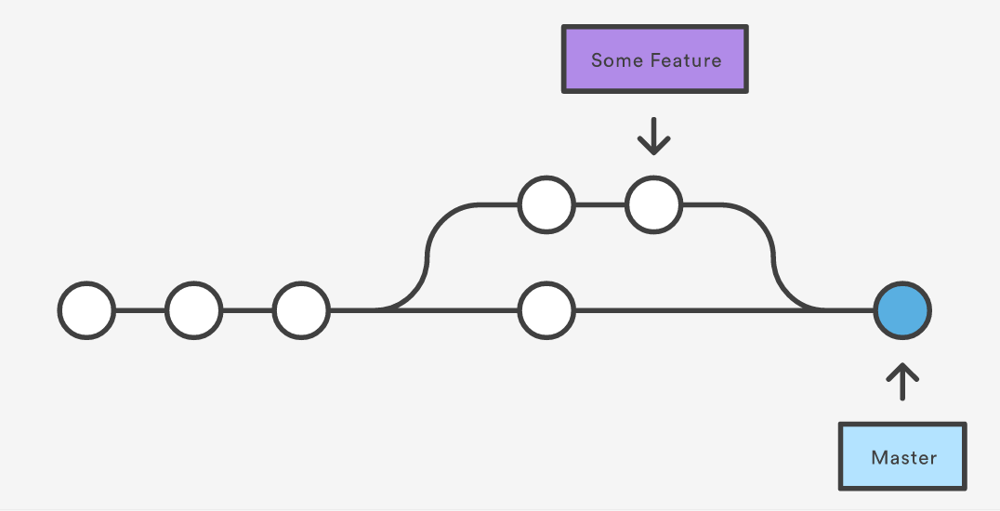

Organization
git history (repository) — staging area — local workstation
HEAD
current snapshot
현재 내가 보고있는 시점/대가리/기록/버전
origin
original source
clone
remote version of origin source
Configuration
git config —global core.editor “subl -n -w"
git config —global user.name <name>
git config —global user.email <email>
git config —global alias.<alias-name> <git-command>
git config —system core.editor <editor>
git config —global —edit
opens config file
git config —global branch.autosetuprebase always
uses rebase (—rebase option) with pull, not using merge
git configuration file stored @ : ~/.gitconfig
local settings : <repo>/.git/config
Basic Commands
git init
initialize
creates .git - contains metadata
—bare create a .git without working directory
git clone
clone remote project to local
ex) $ git clone git://github.com/schacon/grit.git
git add
file, directory 다 됨
adds file to ‘staging area'
커밋 할 후보들을 올려놓는거임
-p : interactive chunk management session
git commit -m “<message>"
commits the change to repository
-a : commit only ‘added’ files
.gitignore : 여기에 파일 추가하면 커밋때 전부 무시함!!
—amend : 방금 전 커밋에 합칠 수 있음
—amend —no-edit : commit message intact
git status
show status
git log
show log
-n <n> restrict number of log
-3 최근 3개꺼 보여줌
—oneline 한줄로 정리
—stat 수치 보여줌
-p 하나 하나 완전 디테일하게 보여줌 like diff
—author=“<pattern>"
—grep=“<pattern>"
<since>..<until> 기간을 설정할 수 있음
<file> 특정 파일에 한정
—graph —decorate —oneline 가장 깔끔하고 예쁜 모드
git checkout master
HEAD를 옮겨다니는 명령
다른 브랜치로 옮길 수도 있고, 현재 브랜치에서 과거로 옮길 수도 있다
-b <new-branch> 브랜치 생성 + checkout
<commit> <file> 특정 파일만 <commit>상태로 돌려놓기
<commit> 과거 commit 상태로 되돌아가기

이거 하면 detached HEAD state가 된다

현재 브랜치의 진행상황과 HEAD가 일치하지 않는 상태
git revert <commit>
<커밋> 상태로 돌아가는데, 새로운 커밋으로써 히스토리에 남음 (reset이랑 이점이 다름)
git reset
staging area 청소. Working dir, commit은 안건드림
<file> staging area에서 파일 제거. Working dir나 commit에는 문제가 없음
—hard Working dir도 가장 최근 커밋이랑 동기화 시켜버림. 위험!
—soft 과거로 돌아가기. 파일은 남겨두고 커밋만 제거
!!!!웬만하면 로컬 청소용으로 쓰셈. 퍼블릭용은 revert임!!!!
git clean
stage에 없는 애들을 working dir에서 제거
-n 연습
-f “force.” 필요함
-df dir도 제거
-f <path> path에 있는애들만 제거
git rebase <base>
rebase commit to another base commit
-i : interactive rebase
-i HEAD~3 : interactive rebase 3 commits behind HEAD
서버에서 싱크용 깃 풀을 한 뒤에 머지 커밋을 없앨 때
풀 대신에 사용할수도 있음

git cherry-pick [commit #]
새로운 브랜치에 내가 원하는 커밋만 가져올 수 있음. 체리피킹
git reflog
내가 그동안 무슨짓을 했는지 보여줌
로그랑은 다르게 헤드 변경이나 브랜치, 체크아웃 등이 기록돼있음
Collaboration
git remote
책갈피 보기. URL쓰기 귀찮으니까
-v : URL까지 보여줌
add <name> <url> 책갈피 추가
rm <name> 제거
http 랑 ssh 형식 지원
- http://host/path/to/repo.git
- ssh://user@host/path/to/repo.git
git fetch <remote>
remote branch에서 뭐했나 통째로 가져와서 보는겁니당
<remote> <branch> 특정 브랜치만 가져옴
does not affect my working dir.
git pull <remote>
git fetch + git merge
git pull A B
pulls from A to B
Upstream dev를 가져올 때 주로 사용
—rebase git merge대신 git rebase를 사용하는 효과
git push <remote> <branch>
내 변화를 다른 repo에 적용시키기
—force 강제로 (non-fast-forward일 때)
—all 내 브랜치 전부 push
—tags 태그도 같이 보냄
-u set upstrem. argument 없이 pull하면 여기서 하게끔
git branch
list branches
<branch> create branch named <branch>
this only “creates”
to switch to this branch, use checkout
-d <branch> delete branch
-D <branch> force delete
-m <branch> rename current branch
-r view remote branches

git merge <branch>
merge <branch> INTO current branch
git merge —no-ff <branch> no fast-forward
merge methods
fast-forward

3-way

changes on same part of same file - 3-way merge can have conflicts to resolve
practice conventions
git rebase -i HEAD~n (squash)
git rebase -i HEAD~3
헤드 3개 전까지의 커밋을 리베이스한다, 인터랙티브하게
do this before pull request (synchronize with server master)
git commit —amend + git push -f
add something that needs to be modified without adding a new commit history